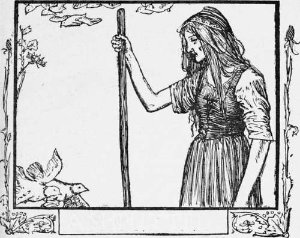

Ashputtel
Description
This section is from the book "Household Tales by Brothers Grimm", by Brothers Grimm. Also available from Amazon: Household Tales by Brothers Grimm.
Ashputtel
The wife of a rich man fell sick; and when she felt that her end drew nigh, she called her only daughter to her bedside, and said, "Always be a good girl, and I will look down from heaven and watch over you." Soon afterwards she shut her eyes and died, and was buried in the garden; and the little girl went every day to her grave and wept, and was always good and kind to all about her. And the snow fell and spread a beautiful white covering over the grave; but by the time the spring came, and the sun had melted it away again, her father had married another wife. This new wife had two daughters of her own, that she brought home with her; they were fair in face but foul at heart, and it was now a sorry time for the poor little girl. "What does the good-for-nothing thing want in the parlour?" said they; " they who would eat bread should first earn it: away with the kitchen-maid! " Then they took away her fine clothes, and gave her an old grey frock to put on, and laughed at her, and turned her into the kitchen.
There she was forced to do hard work; to rise early before daylight, to bring the water, to make the fire, to cook, and to wash. Besides that, the sisters plagued her in all sorts of ways, and laughed at her. In the evening when she was tired, she had no bed to lie down on, but was made to lie by the hearth among the ashes; and as this, of course, made her always dusty and dirty, they called her Ashputtel.
It happened once that the father was going to the fair, and asked his wife's daughters what he should bring them. " Fine clothes," said the first; " Pearls and diamonds," cried the second. " Now, child," said he to his own daughter, "what will you have?" "The first twig, dear father, that brushes against your hat when you turn your face to come homewards," said she. Then he bought for the first two the fine clothes and pearls and diamonds they had asked for: and on his way home, as he rode through a green copse, a hazel twig brushed against him, and almost pushed off his hat: so he broke it off and brought it away; and when he got home he gave it to his daughter. Then she took it, and went to her mother's grave and planted it there; and cried so much that it was watered with her tears; and there it grew and became a fine tree. Three times every day she went to it and cried; and soon a little bird came and built its nest upon the tree, and talked with her, and watched over her, and brought her whatever she wished for.
Now it happened that the king of that land held a feast, which was to last three days; and out of those who came to it his son was to choose a bride for himself. Ashputtel's two sisters were asked to come; so they called her up, and said, " Now, comb our hair, brush our shoes, and tie our sashes for us, for we are going to dance at the king's feast." Then she did as she was told; but when all was done she could not help crying, for she thought to herself, she should so have liked to have gone with them to the ball; and at last she begged her mother very hard to let her go. " You, Ashputtel! " said she ; " you who have nothing to wear, no clothes at all, and who cannot even dance—you want to go to the ball?" And when she kept on begging, she said at last, to get rid of her, " I will throw this dish-full of peas into the ash-heap, and if in two hours' time you have picked them all out, you shall go to the feast too."
Then she threw the peas down among the ashes, but the little maiden ran out at the back door into the garden, and cried out—
"Hither, hither, through the sky,
Turtle-doves and linnets, fly!
Blackbird, thrush, and chaffinch gay,
Hither, Hither haste away!
One and all come healpme, quick!
Haste ye, haste ye!- pick, pick, pick!"
Then first came two white doves, flying in at the kitchen window; next came two turtle-doves; and after them came all the little birds under heaven, chirping and fluttering in; and they flew down into the ashes. And the little doves stooped their heads down and set to work, pick, pick, pick; and then the others began to pick, pick, pick: and among them all they soon picked out all the good grain, and put it into a dish, but left the ashes. Long before the end of the hour the work was quite done, and all flew out again at the windows.
Then Ashputtel brought the dish to her mother, overjoyed at the thought that now she should go to the ball. But the mother said, " No, no I you slut, you have no clothes, and cannot dance; you shall not go." And when Ashputtel begged very hard to go, she said, " If you can in one hour's time pick two of those dishes of peas out of the ashes, you shall go too." And thus she thought she should at last get rid of her. So she shook two dishes of peas into the ashes.
But the little maiden went out into the garden at the back of the house, and cried out as before—
"Hither, hither, through the sky,
Turtle-doves and linnets, fly!
Blackbird, thrush, and chaffinch gay,
Hither, Hither haste away!
One and all come healpme, quick!
Haste ye, haste ye!- pick, pick, pick!"
Then first came two white doves in at the kitchen window; next came two turtle-doves; and after them came all the little birds under heaven, chirping and hopping about. And they flew down into the ashes; and the little doves put their heads down and set to work, pick, pick, pick; and then the others began pick, pick, pick; and they put all the good grain into the dishes, and left all the ashes. Before half an hour's time all was done, and out they flew again. And then Ash-puttel took the dishes to her mother, rejoicing to think that she should now go to the ball. But her mother said, "It is all of no use, you cannot go; you have no clothes, and cannot dance, and you would only put us to shame " : and off she went with her two daughters to the ball.
Now when all were gone, and nobody left at home, Ashputtel went sorrowfully and sat down under the hazel-tree, and cried out—
Continue to:
Tags
fairy tales, children's stories, brothers grimm, household tales